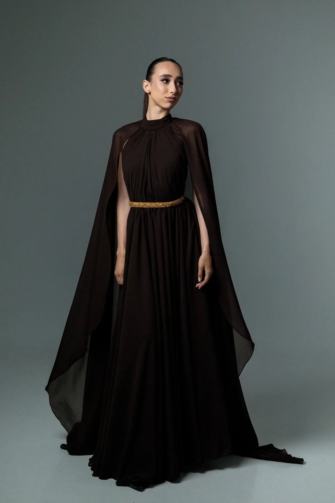
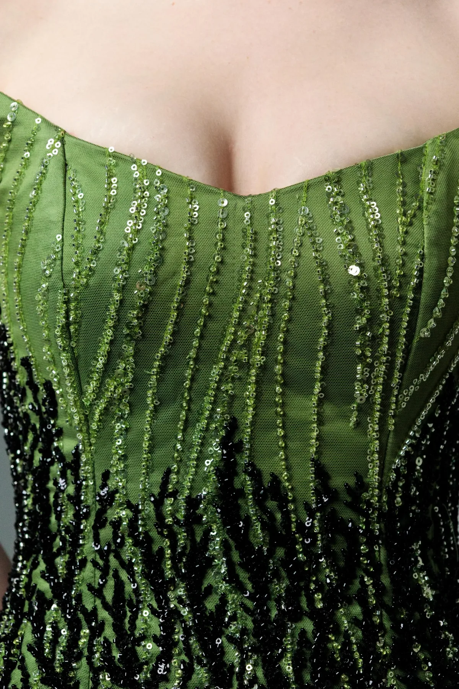

Ручний пошив · Ужгород · доставка по Україні
Сукня, яку ви обираєте
по цифрах, а не навмання
Для кожної моделі й кожного розміру ми виміряли виріб і виклали сантиметри. Порівняйте зі своєю улюбленою сукнею — і замовляйте без сумнівів.

В наявності зараз
Дивитись усе →Просто
Як замовити
Без передоплати на сайті. Ви платите лише тоді, коли отримали сукню й переконались, що вона ваша.
Оберіть і напишіть
Залиште замовлення на сайті або напишіть у Instagram — підкажемо розмір і тканину по вашій моделі.
Примірка
В Ужгороді — примірка наживо за записом. В інші міста — примірка у відділенні Нової Пошти перед оплатою.
Оплата при отриманні
Відправка Новою Поштою наступного робочого дня. Оплачуєте у відділенні, коли забрали сукню.

Про майстерню
Кожен шов — вручну, під вашу фігуру
Nata Kapitos — невелика майстерня з Ужгорода. Ми не робимо тисячі однакових суконь: кожна модель обмежена, з увагою до посадки, тканини й ручної вишивки.
Для клієнток з Ужгорода й області організовуємо примірку наживо — за попереднім записом через Instagram.
Готові обрати свою сукню?
Перегляньте моделі з точними замірами або напишіть нам — і ми допоможемо визначитися з розміром.